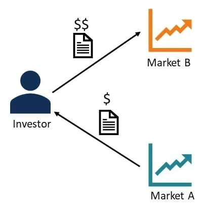

Arbitrage
This trading scheme for cryptocurrency exchanges is extremely simple. You buy cryptocurrency on one exchange at a low price and sell it on another exchange for as much as possible.
It is a simple and profitable cryptocurrency trading strategy on an exchange that only requires regular monitoring of exchange rates. However, when counting on the possible earnings, you need to consider the commission that some exchanges charge. If the difference in the exchange rates of one currency on the exchanges is 2-3% or more, the sale can be profitable. If the exchange rate difference is less than 2%, the profit will be minimal or not at all.
Let's say you bought 10 ETH at $210 ($2100) on one exchange, transferred them to your wallet and immediately sold on another exchange for $225 ($2250). Simple math again - your profit will be $150.
It is worth noting that arbitrage on classic exchanges is a less profitable strategy that is available mainly to professionals. It takes a very fast robot to make money using arbitrage on traditional marketplaces. The response delay of the robot should be within 1 microsecond (one millionth of a second).
On crypto exchanges, at least for now, robots that are a thousand times slower can still make money. With a relatively fast and smart algorithm, with this strategy you can earn up to 10% per month.